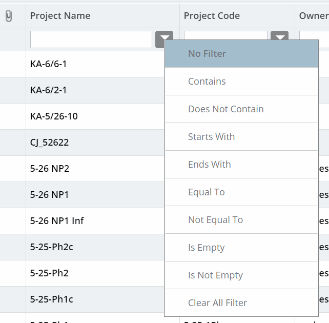

Filtering Using Search Criteria
-
In the module menu, click Projects.
The list of projects you are invited to is displayed.
-
Enter the search criteria in the filter text box in the appropriate columns.
For example, if you are searching for projects with Project Type as TYPE-A, then in the Project Type column, in the filter text box, enter TYPE-A.
-
Click Filter.
Various filter options are displayed to filter information on the column.
The following image displays the filter options that are available for selection.
Figure 1. Filter Options The following table describes the available filter options.Filter Option Description No Filter Removes the filter criterion in that column. Contains Displays records that contain the characters as specified in the criterion. DoesNotContain Displays records that do not contain the characters as specified in the criterion. StartsWith Displays records that contain the characters as specified in the criterion at the beginning of the column value. EndsWith Displays records that contain the characters as specified in the criterion at the end of the column value. EqualTo Displays records that exactly match the characters as specified in the criterion. NotEqualTo Displays records that do not match the characters as specified in the criterion. IsEmpty Displays records that do not have data in the column being filtered. IsNotEmpty Displays records that have data in the column being filtered. Clear All Filter Deletes filter criterion a in all the columns and displays all records. -
Click the appropriate filter option for the specified filter criterion.
Once the filter is applied, the
 filter icon indicates the columns on which the records are filtered.
filter icon indicates the columns on which the records are filtered.